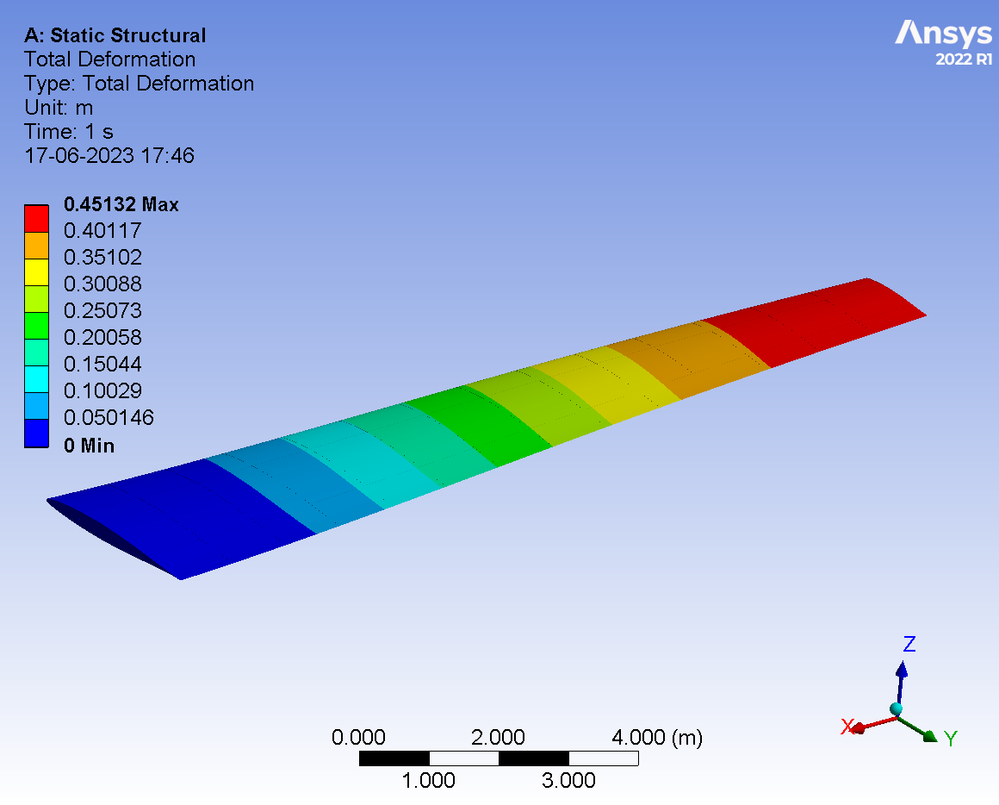
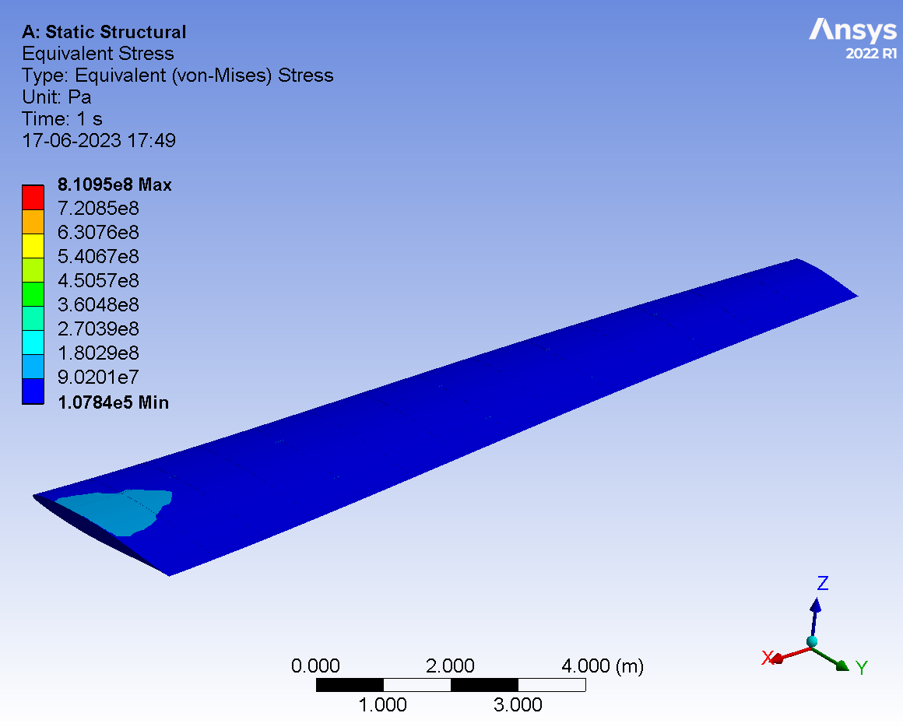
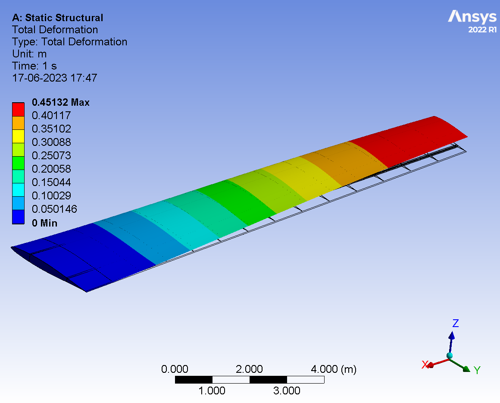
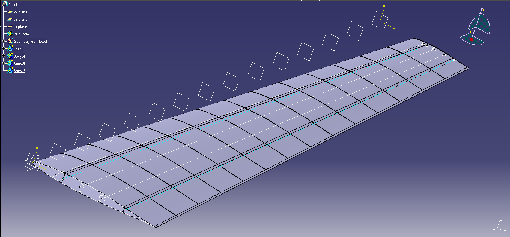
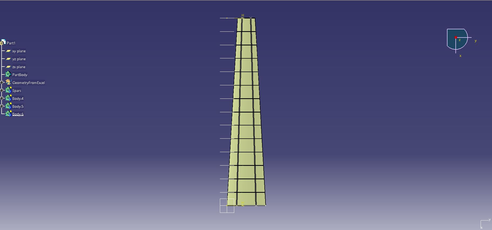

Bachelor’s capstone (2023). I led performance sizing (matching plot) and the static structural analysis of a 3‑D wing using ANSYS.
The project connects conceptual design decisions to structural feasibility.

Static total deformation (primary load case) — used as the cover image.
Key Results (Design Point & Structure)
Maximum take‑off weight (MTOW)
38,540 kg
Wing loading, W/S
582.1 kg/m²
Wing planform area, S
≈ 66.2 m²
Power estimate (total shaft)
≈ 9.05 MW (twin turboprop class)
Max total deformation (FEA)
≈ 0.451 m
Modeled single‑wing mass
≈ 530 kg
Approach
Built constraint curves (take‑off distance, climb, ceiling, cruise) to form a matching plot and select the design point.
Selected NACA 64‑108 and modeled a half‑span wing with ribs, spars and skin.
Ran static structural analysis in ANSYS to visualize deformation and von‑Mises stress.
Figures

Equivalent (von‑Mises) stress field for the same load case.

Deformed vs. undeformed overlay — deformation shape across span.

Internal rib and spar layout used for the structural model.

Planform/top view of the wing geometry.
Note: Results are reported as documented in the 2023 team paper; this page presents a concise, recruiter‑friendly summary.